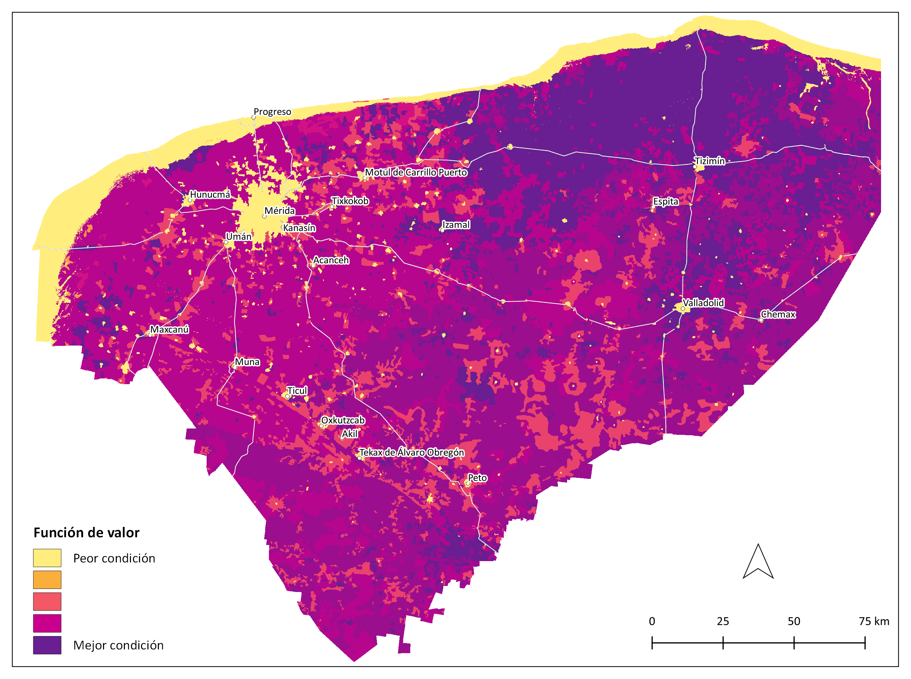
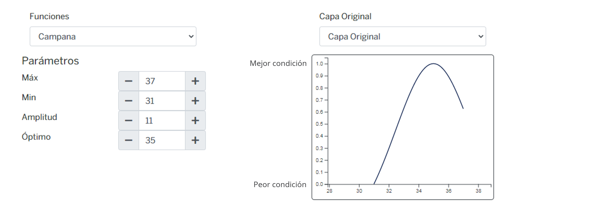
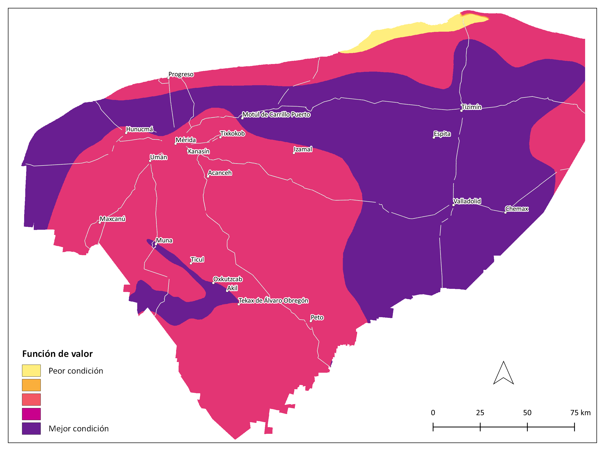
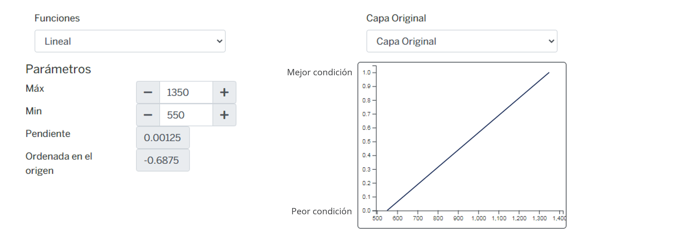
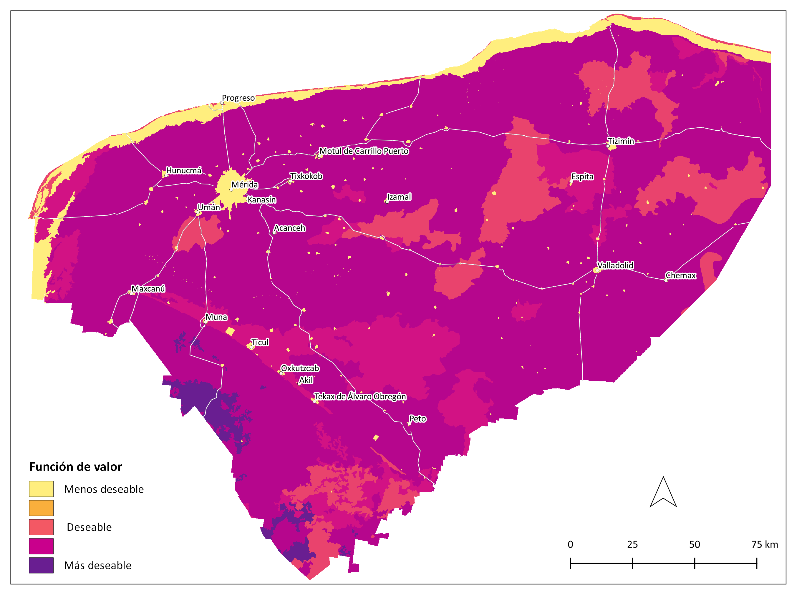
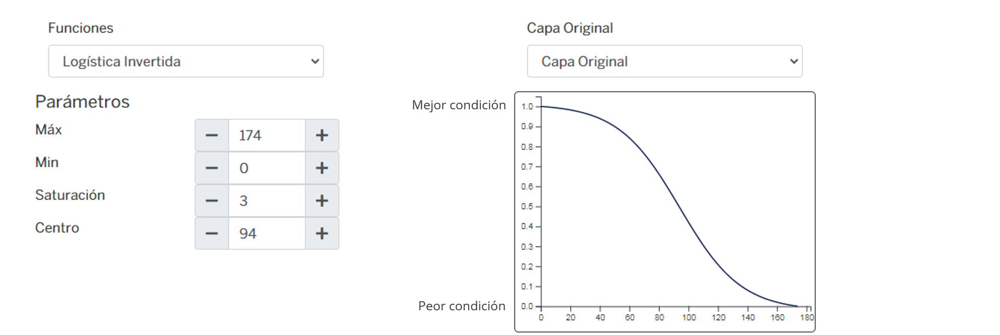
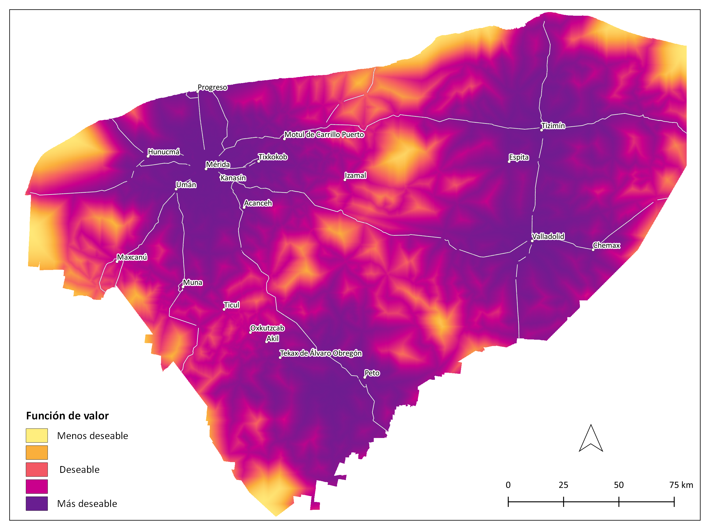
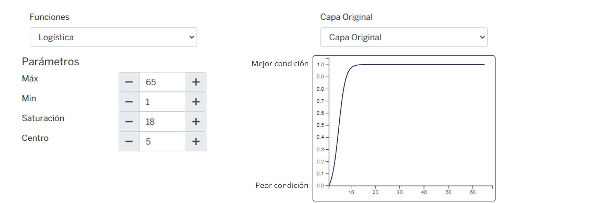
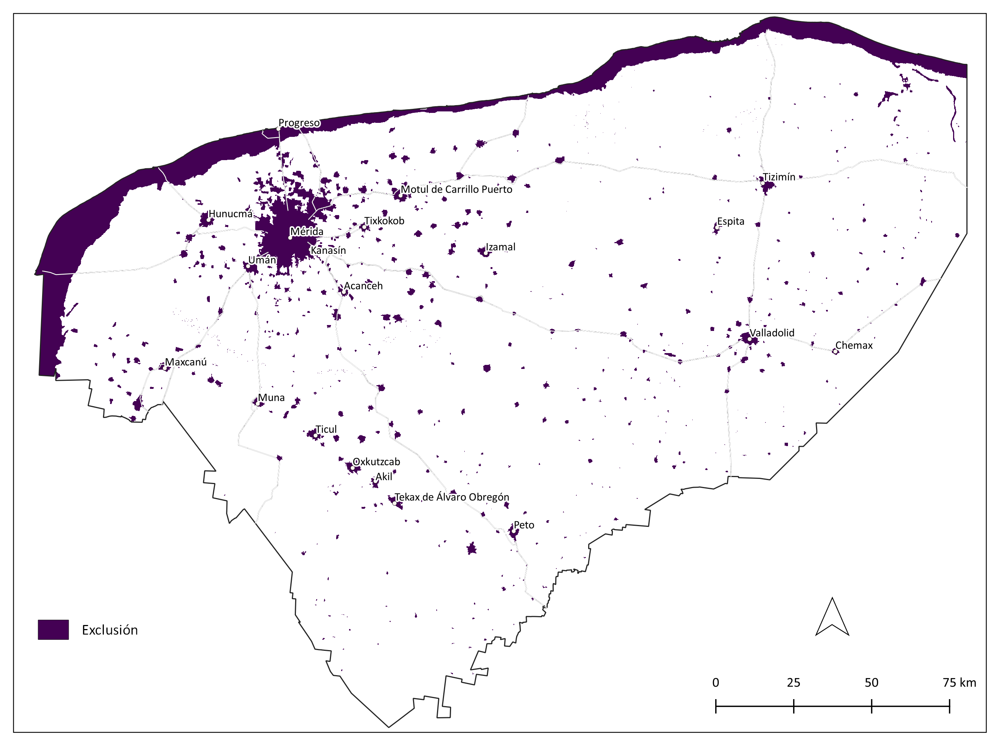
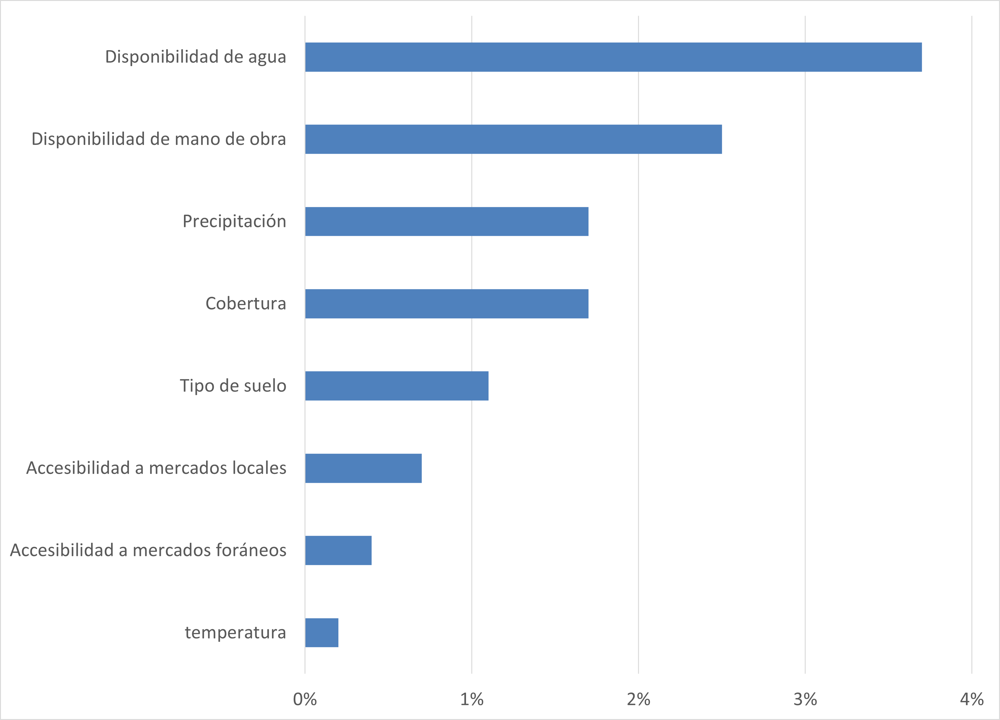

Silvopastoril¶
Sistema de producción bovina integrada a especies arbóreas, arbustivas con gramíneas forrajeras.
Modelo AHP del sistema de alimentación silvopastoril

Criterios¶
Biofísicos¶
| Criterio | Definición |
|---|---|
| Cobertura | Tipo de uso de suelo y vegetación que determina la carga animal y la biodiversidad vegetal. |
| Temperatura | Temperatura ambiente máxima (promedio) que afecta el desempeño productivo de los animales en pastoreo, aunque aumenta la productividad de pastoreo. |
| Precipitación | Precipitación promedio, cantidad y distribución del agua de lluvia para mantener la producción de pasto o sustento para la nutrición de los animales |
| Tipo de suelo | Características físicas (profundidad, pedregosidad) y químicas (MO, Nitrógeno) del suelo para soportar la producción de pasto o sustento para la nutrición de los animales. |
| Disponibilidad de agua | Acceso a la posibilidad de extraer agua del acuífero para el consumo del ganado (nivel piezométrico) |
Cobertura¶
Tipo de uso de suelo y vegetación que determina la carga animal y la biodiversidad vegetal.
Insumos
| Capa | Uso del suelo y vegetación |
|---|---|
| Fuente | Conjunto de datos vectoriales de la carta de Uso del suelo y vegetación. Serie VI. Conjunto Nacional INEGI |
| Año | 2014 |
| Campo | descripcio |
| Escala | 1:250,000 |
| Unidades | Adimensional |
Parámetros de la función de valor
| ID | Categoría | Expresión verbal | FV |
|---|---|---|---|
| 1 | Acuícola | Nula | 0.00 |
| 2 | Agricultura De Riego Anual | Baja | 0.56 |
| 3 | Agricultura De Riego Anual Y Permanente | Baja | 0.56 |
| 4 | Agricultura De Riego Permanente | Baja | 0.56 |
| 5 | Agricultura De Riego Semipermanente | Baja | 0.56 |
| 6 | Agricultura De Riego Semipermanente Y Permanente | Baja | 0.56 |
| 7 | Agricultura De Temporal Anual | Baja | 0.56 |
| 8 | Agricultura De Temporal Anual Y Permanente | Baja | 0.56 |
| 9 | Agricultura De Temporal Permanente | Baja | 0.56 |
| 10 | Agricultura De Temporal Semipermanente | Baja | 0.56 |
| 11 | Cuerpo de agua | Nula | 0.00 |
| 12 | Bosque Cultivado | Baja | 0.56 |
| 13 | Manglar | Nula | 0.00 |
| 14 | Palmar Inducido | Baja | 0.56 |
| 15 | Pastizal Cultivado | Extremadamente alta | 1.00 |
| 16 | Pastizal Halófilo | Muy baja | 0.33 |
| 17 | Pastizal Inducido | Extremadamente alta | 1.00 |
| 18 | Sabana | Muy baja | 0.33 |
| 19 | Selva Baja Espinosa Subperennifolia | Moderada | 0.70 |
| 20 | Selva Mediana Subcaducifolia | Muy alta | 0.87 |
| 21 | Selva Mediana Subperennifolia | Muy alta | 0.87 |
| 22 | Sin Vegetación Aparente | Nula | 0.00 |
| 23 | Tular | Nula | 0.00 |
| 24 | Urbano Construido | Nula | 0.00 |
| 25 | Vegetación De Dunas Costeras | Nula | 0.00 |
| 26 | Vegetación De Petén | Nula | 0.00 |
| 27 | Vegetación Halófila Hidrófila | Nula | 0.00 |
| 28 | Vegetación Secundaria Arbustiva De Manglar | Muy baja | 0.33 |
| 29 | Vegetación Secundaria Arbustiva De Selva Baja Caducifolia | Alta | 0.80 |
| 30 | Vegetación Secundaria Arbustiva De Selva Baja Espinosa Caducifolia | Alta | 0.80 |
| 31 | Vegetación Secundaria Arbustiva De Selva Baja Espinosa Subperennifolia | Alta | 0.80 |
| 32 | Vegetación Secundaria Arbustiva De Selva Baja Subcaducifolia | Moderada | 0.70 |
| 33 | Vegetación Secundaria Arbustiva De Selva Mediana Caducifolia | Alta | 0.80 |
| 34 | Vegetación Secundaria Arbustiva De Selva Mediana Subcaducifolia | Alta | 0.80 |
| 35 | Vegetación Secundaria Arbustiva De Selva Mediana Subperennifolia | Muy alta | 0.87 |
| 36 | Vegetación Secundaria Arbórea De Manglar | Nula | 0.00 |
| 37 | Vegetación Secundaria Arbórea De Selva Baja Caducifolia | Alta | 0.80 |
| 38 | Vegetación Secundaria Arbórea De Selva Baja Espinosa Caducifolia | Moderada | 0.70 |
| 39 | Vegetación Secundaria Arbórea De Selva Baja Espinosa Subperennifolia | Alta | 0.80 |
| 40 | Vegetación Secundaria Arbórea De Selva Baja Subcaducifolia | Alta | 0.80 |
| 41 | Vegetación Secundaria Arbórea De Selva Mediana Caducifolia | Alta | 0.80 |
| 42 | Vegetación Secundaria Arbórea De Selva Mediana Subcaducifolia | Muy alta | 0.87 |
| 43 | Vegetación Secundaria Arbórea De Selva Mediana Subperennifolia | Muy alta | 0.87 |
| 44 | Vegetación Secundaria Herbácea De Selva Baja Caducifolia | Alta | 0.80 |
| 45 | Vegetación Secundaria Herbácea De Selva Mediana Caducifolia | Alta | 0.80 |
| 46 | Vegetación Secundaria Herbácea De Selva Mediana Subcaducifolia | Alta | 0.80 |
| 47 | Área Desprovista De Vegetación | Nula | 0.00 |
Función de valor de cobertura

Temperatura¶
Temperatura ambiente máxima (promedio) que afecta el desempeño productivo de los animales en pastoreo, aunque aumenta la productividad de pastoreo.
Insumos
| Capa | Temperatura máxima promedio |
|---|---|
| Fuente | Adaptado de: Temperatura máxima promedio García, E. - CONABIO |
| Año | 1998 |
| Campo | temp_mean |
| Escala | 1:1,000,000 |
| Unidades | °C |
Parámetros de la función de valor

Función de valor de temperatura

Precipitación¶
Precipitación promedio, cantidad y distribución del agua de lluvia para mantener la producción de pasto o sustento para la nutrición de los animales.
Insumos
| Capa | Precipitación total anual |
|---|---|
| Fuente | Adaptado de: Precipitación total anual García, E. - CONABIO |
| Año | 1998 |
| Campo | prec_mean |
| Escala | 1:1,000,000 |
| Unidades | Milímetros |
Parámetros de la función de valor

Función de valor de precipitación

Tipo de suelo¶
Características físicas (profundidad, pedregosidad) y químicas (MO, Nitrógeno) del suelo para soportar la producción de pasto o sustento para la nutrición de los animales.
Insumos
| Capa | Edafología |
|---|---|
| Fuente | Conjunto de datos vectoriales edafológico. Serie II (Continuo Nacional) INEGI |
| Año | 2014 |
| Campo | tipo_suelo |
| Escala | 1:250,000 |
| Unidades | Adimensional |
Parámetros de la función de valor
| ID | Categoría | Expresión verbal | FV |
|---|---|---|---|
| 1 | Arenosol | Baja | 0.56 |
| 2 | Cambisol | Moderada | 0.70 |
| 3 | Chernozem | Moderada | 0.70 |
| 4 | Gleysol | Moderada | 0.70 |
| 5 | Histosol | Nula | 0.00 |
| 6 | Leptosol | Alta | 0.80 |
| 7 | Luvisol | Alta | 0.80 |
| 8 | Nitosol | Extremadamente alta | 1.00 |
| 9 | Phaeozem | Baja | 0.56 |
| 10 | Regosol | Moderada | 0.70 |
| 11 | Solonchak | Nula | 0.00 |
| 12 | Vertisol | Moderada | 0.70 |
Función de valor de tipo de suelo

Disponibilidad de agua¶
Acceso a la posibilidad de extraer agua del acuífero para el consumo del ganado (nivel piezométrico).
Insumos
| Capa | Nivel freático |
|---|---|
| Fuente | Nivel freático POETY |
| Año | Sin dato |
| Campo | n_freat_m |
| Escala | Estatal |
| Unidades | Metros |
Parámetros de la función de valor

Función de valor de disponibilidad de agua

Socioeconómicos¶
| Criterio | Definición |
|---|---|
| Accesibilidad a mercados locales | Distancia a puntos de venta local de becerros (Tizimín, Valladolid, Mérida y Tzucacab) |
| Accesibilidad a mercados foráneos | Distancia a puntos de venta de carne (Campeche, Cancún, Playa del Carmen). |
| Disponibilidad de mano de obra | Población económicamente activa ocupada en el sector primario (%) |
Accesibilidad a mercados¶
| Criterio | Definición | FV |
|---|---|---|
| Accesibilidad a mercados locales | Distancia a puntos de venta local de becerros (Tizimín, Valladolid, Mérida y Tzucacab) | 0.87 |
| Accesibilidad a mercados foráneos | Distancia a puntos de venta de carne (Campeche, Cancún, Playa del Carmen). | 0.13 |
Accesibilidad a mercados locales
Distancia a puntos de venta local de becerros (Tizimín, Valladolid, Mérida y Tzucacab).
Insumos
| Capa | Distancia a localidades intraestatales |
|---|---|
| Fuente | Adaptado de: [1] Conjunto de datos vectoriales de información topográfica por Entidad Federativa Serie VI. (Zonas urbanas) INEGI y [2] Red nacional de caminos INEGI |
| Año | 2019 |
| Escala | [1] 1:250,000; [2] Sin dato |
| Unidades | Adimensional |
Parámetros de la función de valor

Función de valor de accesibilidad a mercados locales

Accesibilidad a mercados foráneos
Distancia a puntos de venta de carne (Campeche, Cancún, Playa del Carmen).
Insumos
| Capa | Distancia a localidades intraestatales |
|---|---|
| Fuente | Adaptado de: [1] Conjunto de datos vectoriales de información topográfica por Entidad Federativa Serie VI. (Zonas urbanas) INEGI y [2] Red nacional de caminos INEGI |
| Año | 2019 |
| Escala | [1] 1:250,000; [2]Sin dato |
| Unidades | Adimensional |
Parámetros de la función de valor

Función de valor de accesibilidad a mercados foráneos

Disponibilidad de mano de obra¶
Población económicamente activa ocupada en el sector primario (%).
Insumos
| Capa | Población económicamente activa en el sector primario |
|---|---|
| Fuente | Adaptado de: [1] Encuesta Intercensal INEGI y [2] División política municipal INEGI |
| Año | [1] 2015; [2] 2018 |
| Campo | [1] Sector de actividad económica primario |
| Escala | [2] 1:250,000 |
| Unidades | Porcentaje |
Parámetros de la función de valor

Función de valor de disponibilidad de mano de obra

Pesos globales del modelo de aptitud silvopastoril¶
| Criterio | Peso |
|---|---|
| Disponibilidad de agua | 0.38 |
| Cobertura | 0.2 |
| Disponibilidad de mano de obra | 0.15 |
| Accesibilidad a mercados locales | 0.09 |
| Precipitación | 0.08 |
| Tipo de suelo | 0.08 |
| temperatura | 0.02 |
| Accesibilidad a mercados foráneos | 0.01 |
Capa de exclusión¶
Coberturas no aptas de la capa de uso del suelo y vegetación serie VI INEGI usadas como zonas de exclusión (Aptitud nula)
| ID | Categoría |
|---|---|
| 01 | Acuícola |
| 11 | Cuerpo de agua |
| 13 | Manglar |
| 14 | Palmar inducido |
| 16 | Paztizal halófilo |
| 22 | Sin Vegetación Aparente |
| 23 | Tular |
| 24 | Urbano Construido |
| 25 | Vegetación De Dunas Costeras |
| 26 | Vegetación De Petén |
| 27 | Vegetación Halófila Hidrófila |
| 28 | Vegetación Secundaria Arbustiva De Manglar |
| 36 | Vegetación Secundaria Arbórea De Manglar |
| 47 | Área Desprovista De Vegetación |

Mapa de aptitud silvopastoril¶

Área por categoría de aptitud¶
| Categoria | km² | Porcentaje del estado |
|---|---|---|
| Nula | 2359.6 | 6 |
| Muy baja | 719.6 | 2 |
| Baja | 399.0 | 1 |
| Moderada | 4492.7 | 11 |
| Alta | 11615.5 | 30 |
| Muy alta | 19793.8 | 50 |
Sensibilidad de atributos¶
